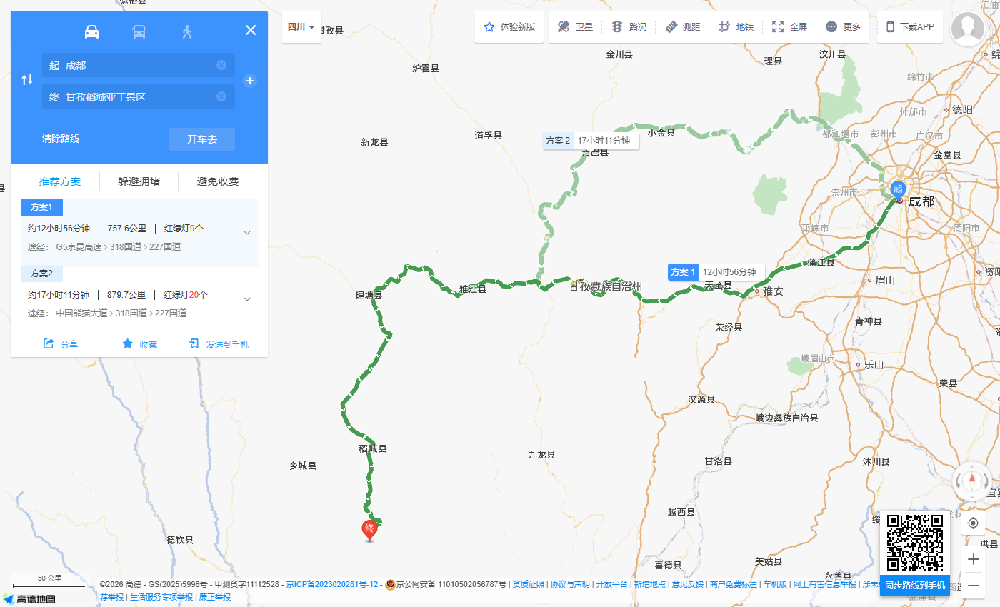
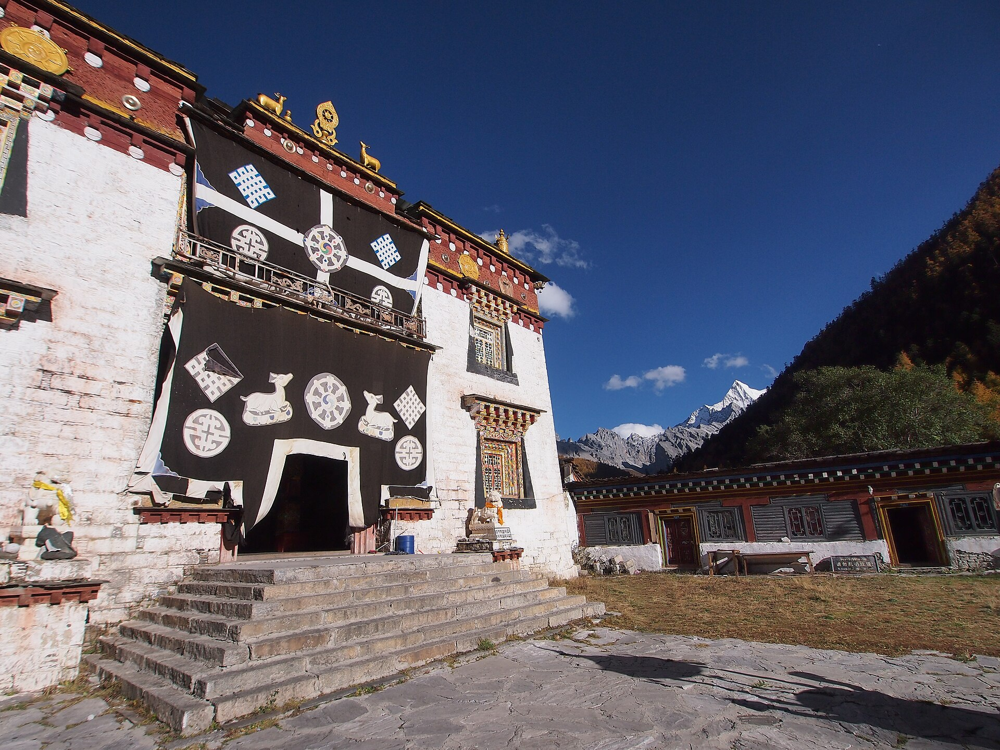
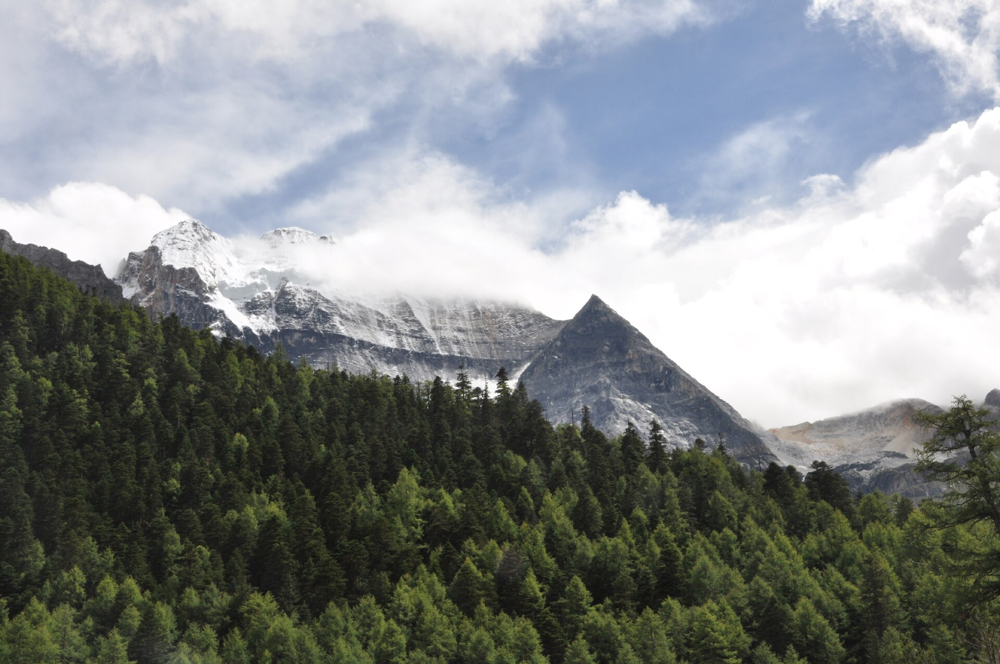
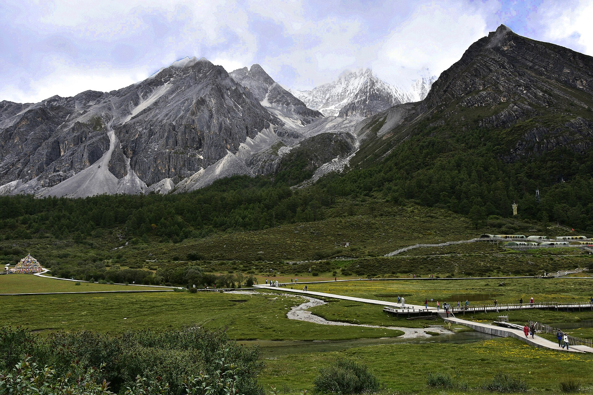
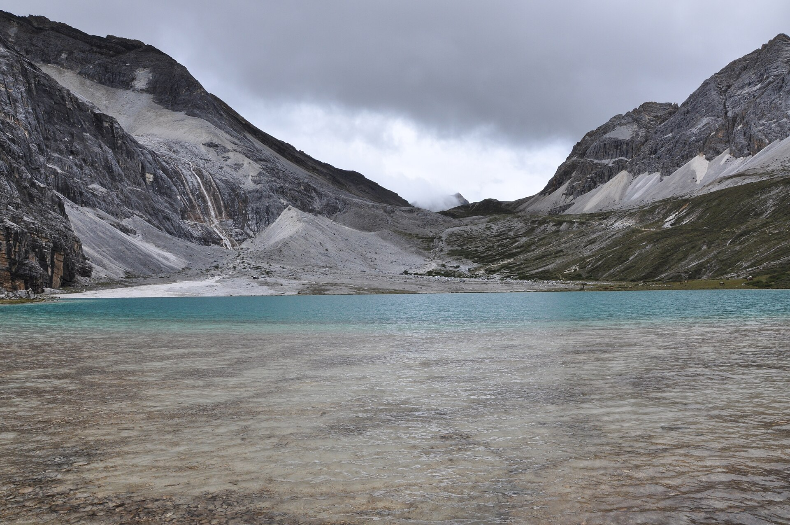
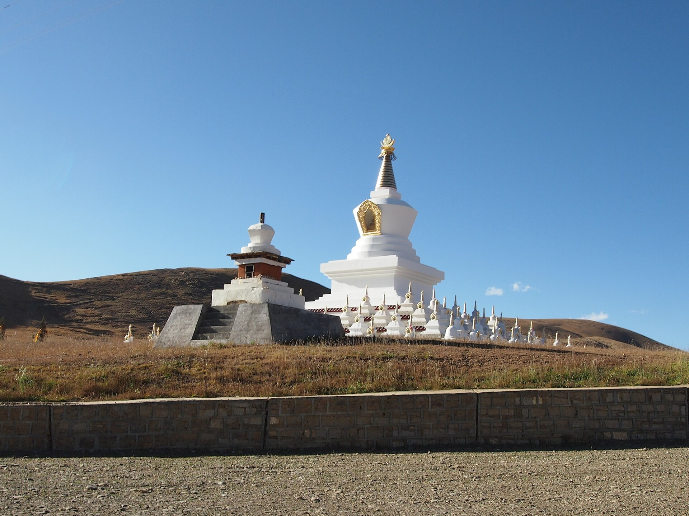

主玩法中低徒步
把雪山草甸看完整，不追高海拔打卡
短线看冲古寺、冲古草甸和珍珠海；第二天按景区当天开放交通到洛绒牛场，步行以草甸近端栈道为主。画面已经足够代表亚丁。
广州/佛山 → 成都 → 稻城亚丁机场 → 香格里拉镇 → 亚丁景区 → 稻城 → 成都 → 广州/佛山
核心：冲古寺、冲古草甸、珍珠海、洛绒牛场。牛奶海和五色海只作高强度可选支线。
短线看冲古寺、冲古草甸和珍珠海；第二天按景区当天开放交通到洛绒牛场，步行以草甸近端栈道为主。画面已经足够代表亚丁。
挑战线海拔高、爬升长、天气变化快。只有身体无不适、天气好、景区开放且本人主动想走时才临时考虑；任何一项不合适就不去。

路线：广州白云 → 成都
今晚：实际起飞机场圈
关键：不夜逛，确认D2航站楼
路线：成都 → 稻城机场 → 香格里拉镇
今晚：香格里拉镇第1晚/共3晚
关键：机场不久留，只下撤休息
路线：冲古 → 珍珠海
今晚：香格里拉镇第2晚/共3晚
关键：仙乃日和草甸优先
路线：景区交通 + 草甸近端栈道
今晚：香格里拉镇第3晚/共3晚
关键：不默认走牛奶海
路线：香格里拉镇 → 稻城县城
今晚：稻城县城第1晚/共1晚
关键：白塔可删，先恢复
路线：稻城机场 → 成都
今晚：成都机场圈第1晚/共1晚
关键：不接同日紧张返程
路线：成都 → 广州/佛山
今晚：正常不住
关键：只保返程
路线：广州/佛山 → 成都
今晚：正规接驳集合点附近
关键：确认司机和车牌
路线：成都 → 康定 → 新都桥
今晚：新都桥主路第1晚/共1晚
关键：长车程，不临时加点
路线：新都桥 → 理塘 → 香格里拉镇
今晚：香格里拉镇第1晚/共3晚
关键：天黑前入住
路线：冲古 → 珍珠海
今晚：香格里拉镇第2晚/共3晚
关键：短线适应
路线：景区交通 + 草甸近端栈道
今晚：香格里拉镇第3晚/共3晚
关键：中低强度止步
路线：香格里拉镇 → 稻城县城
今晚：稻城县城
关键：白塔可删
路线：稻城机场 → 成都
今晚：成都机场圈
关键：保留航班缓冲
路线：成都 → 广州/佛山
今晚：正常不住
关键：只保返程
睡前：核对成都起飞机场、航站楼、稻城接车人。
落地：机场约4411米，不逗留拍照，直接下撤。
必带：身份证、票码、雨具、薄外套、水、充电宝。
止损：头痛胸闷就回冲古寺/车站。
默认：按景区当日交通往返，洛绒牛场栈道慢走。
不做：不把牛奶海/五色海当成必须。
今晚：稻城县城恢复，再飞成都。
原则：航班日不再接紧张跨城票。
睡前：确认正规订单、司机、车牌、接送点。
不要：不接陌生人私下揽客。
必带：晕车药、水、轻食、薄外套、充电宝。
原则：长车程不临时加景点，不赶夜路。
顺序：先短线，再洛绒中低强度线。
止损：任何高反立即缩短。
今晚：稻城恢复，飞成都后再住一晚。
原则：不压缩航班缓冲。






| 项目 | 当前参考 | 在哪里查 | 建议提前 | 没票/停运怎么办 |
|---|---|---|---|---|
| 亚丁景区实名预约/门票 | 2026-08-01至10-31门票免票；7月31日前支付价仍须在官方付款页复核 | 亚丁景区官网、官方微信公众号、官方购票页 | 日期确定后即查；免票期也须实名预约 | 不找不明代购；预约失败就改日期，不现场赌名额 |
| 游客中心至扎灌崩交通 | 景区自2026-05-29起暂停交通服务收费；新价格公布前不写死 | 官方购票页、公众号、入园当日公告 | 与预约一起确认 | 停运则不进沟，不步行替代约37公里公路 |
| 冲古寺至洛绒牛场交通 | 同属本轮交通服务整改范围，当前是否收费及运营以官方付款页为准 | 景区官方、现场公告 | 第二个景区日前一晚复核 | 停运就只做短线，不徒步补约6.7公里 |
| 二次入园 | 旧规则为首日实名登记；整改期政策可能联动变化 | 首日检票口、官方购票页、公众号 | 首个景区日入园前问清 | 无法二进就把洛绒与短线二选一，不违规重复入园 |
| 挑战线开放 | 受天气、步道和现场管控影响，不作为本路线默认内容 | 景区官网/公众号当天公告 | 只在洛绒当日判断 | 关闭或身体不适就停在洛绒牛场 |
| 成都与稻城大交通 | A为往返航班；B为去程正规陆路、返程航班，班次和价格均会变 | 航司官网、正规平台小团/接驳订单、OTA支付页 | 确定日期后即查可取消方案 | 航班取消就续住；陆路异常按平台和交管安全落脚，不赶夜路 |
政策时间线：旧官方页面仍展示146元门票、120元观光车和80元电瓶车等历史标准，但2026-05-29起交通服务已暂停收费，2026-08-01至10-31门票免票。运营时段、二次入园和整改后的新交通价格必须以出发日期的官方付款页与当天公告为准。
今日一句话：把体力留给高原，成都只承担中转。
今日预算：以航班支付页、机场接驳和酒店订单为准。
今日可删：全部城市夜游。
导航关键词：成都实际落地机场 + D2起飞机场酒店。
睡前：确认D2起飞机场、航站楼、托运行李和稻城接车。
佛山到广州白云机场，国内航班至少提前2小时到。
按D2实际起飞机场住同机场圈；若D2从另一机场起飞，今晚直接转到对应机场附近。
取消所有活动，优先睡够。
酒店外卖清淡面/粥。
按航班建议提前2小时到航站楼。
今日目标：安全下撤到约2900米的香格里拉镇。
关键风险：稻城机场海拔约4411米，不在机场久留，不跑跳。
要带：身份证、薄外套、水、晕车药、充电宝。
成都飞稻城；具体航班以实际出票为准。
取行李、联系已确认的正规平台司机，核对姓名、车牌和目的地。
稻城机场 → 香格里拉镇主路酒店；途中只做必要休息。
清汤面、菌汤或清淡家常菜；不饮酒、不洗很热的长时间澡。
立即告诉司机，去低海拔镇区/卫生机构评估。
成都续住，整体顺延；不当夜拼山路车。
07:00前后出发，短线适应。
必看：冲古寺、冲古草甸、珍珠海、仙乃日。
步行：短线仍有台阶和缓坡，按约3-4小时慢走，不追速度。
可删：任何绕行拍照点。
早餐、检查预约信息和天气。
酒店 → 亚丁游客中心，预留核验。
按当天交通安排到扎灌崩 → 步行冲古寺/草甸 → 珍珠海观景 → 原路返回乘车点。
开始返程，避免把第一天体力耗尽。
只走冲古寺和草甸，珍珠海视路况删。
停止上行，回扎灌崩乘车出沟。
充满手机/充电宝，核对D4交通和二次入园规则。
默认终点：洛绒牛场栈道和开阔草甸。
中低强度：按当天景区交通往返，只在牛场按状态慢走。
高强度分支：牛奶海/五色海不是本方案任务。
按首日核对结果二次入园，乘当天开放交通到扎灌崩。
步行到冲古寺交通站 → 按当天运营安排到洛绒牛场。
近端栈道、草甸、三神山视角；每30-40分钟坐下补水。
开始返程，两段交通都留出排队时间。
牛场短停后原路回，不硬等云开。
到站只看近处草甸，随下一班返回。
08:30左右退房去稻城县城。
今日一句话：只下撤、休息和确认送机，不再加高强度景点。
预算口径：镇到县城接驳计入500-900元总接驳区间；白塔只做短打车可选。
必做/可删：必做入住、补水和确认D6送机；白塔及全部额外景点都可删。
不辣吃饭：搜“稻城县城 清淡家常菜 不辣”或“清汤面”。
今日要带：身份证、接驳订单、水、晕车药、充电宝、薄外套。
香格里拉镇主路酒店退房；正规平台接驳约2-3小时，提前一晚确认上门点和两人总价。
稻城县城主路酒店寄存/入住，午餐后午睡2小时。
身体舒服才打车短看白塔30-45分钟；不舒服就留在酒店。
核对D6送机司机、车牌、出发时间和稻城机场航站楼。
白塔直接删除，入住后只吃饭休息。
不外出，酒店补水并把行李收好。
按航班时间倒推3小时从县城酒店出发。
今日一句话：平稳离开高原，不接同日跨城紧张票。
预算口径：送机计入接驳区间，稻城飞成都计入2400-4200元两人往返航班项。
必做/可删：只保送机、航班和入住；全部成都活动可删。
不辣吃饭：机场或酒店选粥、清汤面、蒸蛋。
今日要带：身份证、航班订单、充电宝、水、常用药。
稻城县城主路酒店上车去稻城亚丁机场，山路、值机和安检一并留足缓冲。
到出发层办理值机；不在高海拔机场闲逛拍照。
机场到D7同机场圈酒店约30-60分钟，直接入住、清点行李和休息。
成都酒店保留可取消，不把D7改成早班紧接。
停止活动，向机场工作人员求助并按需就医。
按D7航班提前2小时到对应航站楼。
今日一句话：只保返程，不补成都景点。
预算口径：成都到广州机票计入2600-4200元两人往返项；广州回佛山按实际城际/地铁/打车付款。
必做/可删：必做值机和回家；全部补景点可删。
不辣吃饭：机场简餐选粥粉面或清淡套餐。
今日要带：身份证、航班订单、充电宝、水、全部行李。
成都机场圈酒店退房，乘酒店接送或打车到实际航站楼。
完成值机和安检，不临时离开机场。
按当日运营选择地铁、城际或打车回佛山。
优先改签同日后续航班；必要时续住机场圈。
先就医，不补行程。
落地后向家人报平安并检查行李。
今日一句话：落地后住到集合点1公里内，只为明早准时上车。
预算口径：广州成都大交通按支付页；成都接驳与集合点住宿按订单。
必做/可删：必做核对司机、车牌、保险、路线、两人总价；夜游全部删除。
不辣吃饭：集合点附近清汤面、粥或蒸菜。
今日要带：身份证、订单、充电宝、晕车药、薄外套。
广州/佛山到成都，按票面提前到机场或车站。
到订单指定集合点1公里内酒店入住。
书面确认D2上车点、07:30前后发车、司机电话、车牌和退款规则。
先联系平台改次日集合，不私下追车。
外卖清淡餐，立即休息。
比约定集合时间提前20分钟到上车点。
今日目标：只完成转场并住进新都桥，不把康定当住宿变量。
今日交通：正规小团/平台接驳；约8-10小时，以路况为准。
今日必做：核对司机、车牌、保险、两人总价和新都桥酒店送达点。
今日可删：全部沿途临时景点。
不辣吃饭：清汤面、蒸蛋、米饭和清淡家常菜。
导航关键词：新都桥镇主路酒店。
成都集合点上车，行李和证件随身。
正规服务区简餐补水，不吃重辣。
到新都桥主路酒店入住，确认D3接车。
取消所有停留，仍无法到达就按平台安排安全落脚。
立刻告知司机，在正规服务点休息。
07:30后出发，先吃早餐。
今日一句话：只做长转场，目标是天黑前住进香格里拉镇。
预算口径：与D2共用方案B陆路3800-6800元两人书面订单。
必做/可删：理塘只补给、用厕所；沿途打卡全部可删。
不辣吃饭：服务区清汤面或自备面包、牛奶。
今日要带：身份证、水、轻食、晕车药、充电宝、薄外套。
新都桥主路酒店上车，核对当天终点和司机。
理塘正规服务点短停30-45分钟，只补给、用厕所和简单午餐。
送达香格里拉镇主路酒店，入住后不再外出。
按平台/交管在安全城镇住宿，触发下方异常重排，不走夜路。
车上休息，沿途点全部删除。
正常到镇才07:00前后去短线；异常到达则按重排执行。
今日一句话：先用短线看仙乃日并测试身体，不追速度。
预算口径：以官方预约页和当日交通付款页为准。
必做/可删：必做冲古草甸、仙乃日；珍珠海上行段可删。
不辣吃饭：自带轻食，回镇搜“清汤面 不辣”。
今日要带：身份证、票码、雨衣、水、轻食、充电宝、薄外套。
酒店到亚丁游客中心，至少提前30分钟核验。
游客中心 → 当日交通 → 扎灌崩 → 冲古寺/草甸 → 珍珠海 → 原路返回。
开始离场，回镇休息并确认D5二次入园规则。
只留冲古草甸，雷电或大雨直接出沟。
立即停止上行，回扎灌崩乘车。
07:00前后出发；若今天不适，D5取消。
今日一句话：坐车到草甸核心，只走近端栈道。
预算口径：二次入园和洛绒交通以官方当日付款页为准。
必做/可删：洛绒近端栈道必做；远端、骑马、牛奶海和五色海全可删。
不辣吃饭：水与轻食自备，回镇吃菌汤或清汤面。
今日要带：身份证、预约、雨衣、防风外套、水、轻食、充电宝。
酒店到游客中心，核对二次入园和交通运营。
到扎灌崩 → 冲古寺交通站 → 按当日运营到洛绒牛场。
近端栈道慢走0.5-1.5公里，随时原路返回。
乘车离场，回镇收拾D6行李。
到站短看15-30分钟就返程。
取消洛绒，不徒步补6.7公里。
08:30左右退房去稻城县城。
今日一句话：下撤、午睡、确认送机。
预算口径：正规接驳约2-3小时，计入方案B另列300-700元接驳项。
必做/可删：入住和确认D7送机必做；白塔可删。
不辣吃饭：县城清淡家常菜或清汤面。
今日要带：身份证、订单、水、晕车药、充电宝。
镇主路酒店退房上车。
到稻城县城主路酒店，午餐、午睡、补水。
确认D7司机、车牌、出发时间和航班。
取消白塔，只入住。
酒店休息，不外出。
航班前3小时从县城出发。
今日一句话：只飞离高原，不接当天广州紧张票。
预算口径：稻城飞成都计入方案B大交通；送机计入接驳项。
必做/可删：送机、航班和入住必做；全部成都活动可删。
不辣吃饭：机场或酒店吃粥、清汤面。
今日要带：身份证、航班订单、充电宝、水、常用药。
县城主路酒店出发去稻城亚丁机场。
到出发层值机安检，不久留拍照。
到D8同机场圈酒店入住。
保留成都可取消酒店，不改同日联程。
立即求助机场工作人员。
按D8航班提前2小时到航站楼。
今日一句话：利用缓冲日从容返程，不补景点。
预算口径：成都广州大交通按真实支付页。
必做/可删：值机和回家必做；全部补景点可删。
不辣吃饭：机场清淡套餐。
今日要带：身份证、订单、充电宝、水、全部行李。
成都机场圈酒店退房并前往实际航站楼。
按当日运营回佛山。
改签同日后续班或续住机场圈。
取消一切停留，直接回家。
向家人报平安并检查行李。
范围：次日实际起飞机场1-3公里；不跨天府/双流机场。
搜索：“成都天府/双流机场 酒店 接送 24小时前台”。
价位风险：暑期和深夜到达涨价，必须看含税支付价。
吃饭：酒店简餐、粥粉面；避开需长途打车的网红圈。
检查：可取消、接送时段、可寄存；次日直达航站楼。
范围：镇主路，距游客中心车程约15-30分钟；不住偏远山坳。
搜索：“亚丁景区 香格里拉镇主路 热水 供氧 可取消”。
价位风险：旺季连住和供氧房溢价明显，以真实OTA截图为准。
吃饭：搜“清汤牦牛肉/菌汤/番茄鸡蛋面 不辣”。
检查：热水、供暖/空调、低楼层/电梯、接送和医疗协助。
范围：县城主路、正规接驳易上车处；不为白塔景观住偏远。
搜索：“稻城县城 主路 酒店 送机 可取消”。
吃饭：清淡家常菜、面食；避开夜间绕城。
检查：代约送机、早餐打包、可取消；D6航班前3小时离店。
范围：订单指定集合点1公里内，避免清晨跨城打车。
检查：可取消、24小时前台、早餐打包；D2步行或短打车到集合点。
范围：接驳主线路边1公里内，不住山坳民宿。
搜索：“新都桥镇 主路 酒店 热水 供暖 可取消”。
检查：热水、供暖、电梯/低楼层、D3门口接车；只住新都桥，避免D3起点断链。
镇主路、可协助景区接送；优先热水、低楼层和医疗便利。
稻城方便送机，成都按返程机场选圈，形成完整缓冲。
直接核对：携程酒店页。出发前以支付页、退改规则和房型为准。
入园前：身份证、票码、雨衣、薄外套、防晒、水、轻食、充电宝、舒服鞋。
必看：冲古草甸、仙乃日、珍珠海。可删/退出点：珍珠海上行段；不舒服就在冲古草甸结束并回扎灌崩。
厕所/补给：游客中心、扎灌崩和主要服务点；进步道前先用厕所，轻食自备。出园：回香格里拉镇酒店休息。
入园前：完成二次入园规则核对，带身份证、预约信息、充电宝、雨衣、防风外套、水、轻食。
必看：洛绒牛场开阔草甸、雪山同框。可删/退出点：远端栈道和全部挑战支线；到站不舒服就看15分钟返程。
天气：小雨穿雨衣短走，大雨/雷电直接返程。太累：交通站附近看15-30分钟就回。
只有以下条件全部满足才考虑：景区当天开放、天气稳定、无头痛胸闷、首个景区日适应良好、时间充足、同行人同意、本人主动想走。任何一项不满足都停在洛绒牛场。
官方提示：洛绒牛场到舍身崖约3.5公里，可按现场规则选择马帮；之后仍有约1.8公里高海拔徒步。它明显超出本用户默认中低强度范围。
氧气：可备用小瓶氧气，但氧气不能替代下撤和就医。明显不适立即停止、返程并寻求景区工作人员协助。
走法：住稻城县城主路，傍晚打车/接驳到白塔附近，只做平缓区域短停和拍照，30-45分钟后返回。不做：不为白塔绕远，不压缩送机休息。
清汤牦牛肉、菌汤锅、番茄鸡蛋面、清汤面、蒸蛋、炒青菜、白米饭、青稞饼、酸奶、粥。
红油凉菜、麻辣牦牛肉干、辣蘸碟、重辣火锅、酒精和过量咖啡。清汤锅也要确认蘸料和底料没有花椒辣椒。
可以在当地正规渠道购买小瓶氧气备用。稻城机场约4411米、洛绒牛场约4180米、挑战线更高；但氧气不是继续上行的通行证。头痛加重、胸闷、步态不稳或明显不适时立即停止、下撤，必要时联系景区医疗。
必须。票码、导航、联系司机和拍照都耗电。每天晚上手机和充电宝充满；容量、标识和随身携带规则以航司/铁路安检要求为准，不托运。
薄羽绒或抓绒、防风外套、雨衣、帽子、墨镜、防晒霜、润唇膏、舒服且防滑的鞋。不要只按成都温度准备。
水、面包/饭团、巧克力、纸巾、晕车药、肠胃药、创可贴和个人常用药。有心肺基础疾病或严重贫血，出发前先咨询医生。
按当前免票与交通暂停收费下限、旧政策可复算上限分别计算。
仍包含成都⇄稻城、住宿、票务预留、接驳、餐饮和备用金。
即使遇到免票，也不能覆盖正规交通与安全住宿。
低端按当前免票与暂停收费，顶端按旧政策可复算上限和陆路价格风险。
仍包含川西陆路、稻城返成都、住宿、票务预留、餐饮和备用金。
不应通过私车和漏算住宿硬压。
| 项目 | 方案A两人 | 方案B两人 | 说明 |
|---|---|---|---|
| 广州/佛山 ⇄ 成都机票 | 2600-4200 | 2600-4200 | 此行按飞机口径列账；用户的4000元口径只扣实际机票。若改坐高铁，高铁票必须重新计入。 |
| 成都与稻城大交通 | 2400-4200 | 3800-6800 | A为往返航班；B含去程正规陆路和返程航班。 |
| 景区票务和交通 | 0-812 | 0-812 | 0对应免票期且交通暂缓收费；812按旧政策两成人“门票146 + 首日观光车120 + 二次入园观光车60 + 洛绒交通80”复算，仅作历史上限，不代表当前固定价格。支付前按官方页面重算。 |
| 6/7晚住宿 | 2200-4200 | 2600-4800 | 按成都、香格里拉镇、稻城及中途主路正规住宿。 |
| 接驳/市内交通 | 500-900 | 已大部分计入陆路项，另300-700 | 正规平台，不用无订单私车。 |
| 餐饮 | 900-1200 | 1050-1350 | 两人清淡简餐与景区轻食。 |
| 备用金 | 500-1000 | 600-1200 | 天气、航班、医疗和临时住宿。 |
以上是决策区间，不是固定报价。没有将供氧房、挑战线骑马、无人机、旅拍或高价景观房计入。
| 单人独行分项 | 方案A | 方案B | 计算口径 |
|---|---|---|---|
| 广州⇄成都 | 1300-2100 | 1300-2100 | 双人机票区间减半，出票时按单人支付页。 |
| 成都与稻城大交通 | 1200-2100 | 1900-3400 | A为往返航班单人份；B为陆路小团单人份加返程航班。 |
| 票务 | 0-406 | 0-406 | 当前优惠下限至旧政策单人可复算上限。 |
| 整间住宿 | 2200-4200 | 2600-4800 | 单人仍支付整间房，不减半。 |
| 接驳 | 350-700 | 200-500 | 按可拼车与部分固定送机折中估算。 |
| 餐饮 | 450-600 | 525-675 | 双人餐饮减半。 |
| 备用金 | 500-1000 | 600-1200 | 天气、医疗和临时住宿不因单人而减半。 |
| 单人合计 | 含广州成都6000-11106；不含4700-9006 | 含广州成都7125-13081；不含5825-10981 | 逐项相加，可直接复算。 |
单人表是结构性估算，不是单人现价承诺；出票和订房时必须按单人重新拉支付页。
不要在机场停留拍照，立刻联系已确认司机下撤香格里拉镇；坐直、少说话、慢呼吸。症状明显或加重，直接去医疗机构，不进景区。
立刻停止沿途加点，在最近安全城镇或正规服务点休息；联系平台司机与酒店，必要时中止上行并就医，不走夜路补进度。
先拨打120并说明“高海拔不适、当前位置、症状和人数”；也可让酒店/司机导航“稻城县人民医院（稻城县金珠镇亚丁路二段9号）”。不要自己驾车，不把普通氧气瓶当作治疗。
停止上行，回扎灌崩乘车出沟并联系景区工作人员；明显胸闷、步态不稳、意识异常或症状加重，立即拨打120或请工作人员启动医疗救援。第二个景区日直接取消，不用氧气硬顶原计划。
首个景区日小雨只做冲古寺/草甸，大雨、雷电或官方关闭就在镇上休息；第二个景区日天气差就取消洛绒长停。住宿和返程日期不前后互换，不走野路、不硬等放晴。
取消洛绒牛场，不徒步补约6.7公里；短线也只在官方允许的交通和步道范围内执行。改镇上休息，保护膝盖和返程体力。
先在原平台申请改派/退款，再请酒店前台协助联系有资质车辆；不在机场、客运中心接受陌生人私下揽客。
去程取消就在成都续住，整体顺延；返程取消就在稻城县城续住，不连夜走山路。使用可取消酒店和备用金。
先删牛奶海等所有额外项目、景观房和白塔包车；再比较A/B大交通。若两人不含广州机票预算只有4000元，直接换路线，不牺牲安全住宿和正规交通。
把点餐话术直接给店员看；做错就换清汤面、白饭、蒸蛋或重新制作，不勉强吃红油菜。